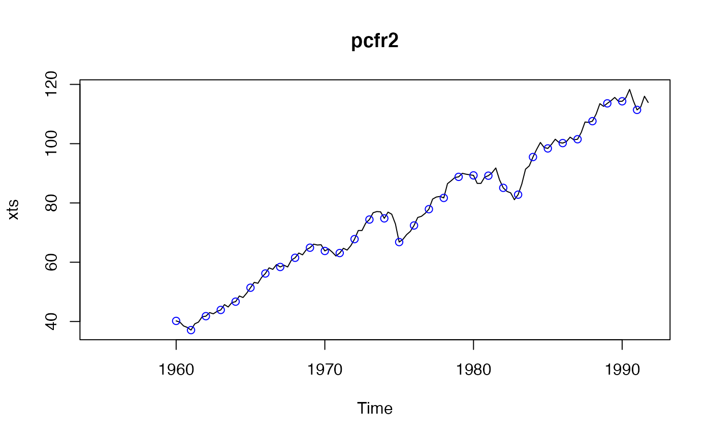
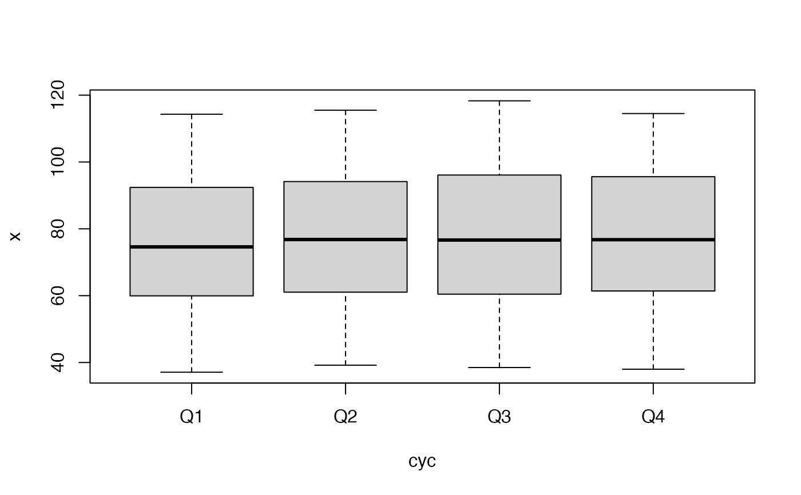

Periodically Correlated and Periodically Integrated Time Series
pcts-package.RdClasses and methods for modelling and simulation of periodically correlated (PC) and periodically integrated time series. Compute theoretical periodic autocovariances and related properties of PC autoregressive moving average models. Some original methods including Boshnakov & Iqelan (2009) <doi:10.1111/j.1467-9892.2009.00617.x>, Boshnakov (1996) <doi:10.1111/j.1467-9892.1996.tb00281.x>.
Details
The underlying assumption is that the observations are made at regular
intervals, such as quarter, month, week, day --- or represent data for
such intervals --- and these intervals are nested into larger periods.
In pcts we call the larger period a cycle and its parts seasons. Typical
examples of season-cycle timing are months in a year, quarters in a
year, days in a week (or business week). The number of seasons in a
cycle is called frequency in class "ts" in base R.
Cycles in pcts keep not only the number of seasons (frequency) but other
information, such as the names of the seasons and units of seasons. In
pcts there are a number of builtin cycle classes for typical cases, as
well as provision for creation of custom cycles on the fly. See
pcCycle and BuiltinCycle for ways to create
cycle objects, and allSeasons for further examples.
Periodic time series can be created with pcts, which
accepts as input vectors, matrices and time series objects from base R
and some other packages, including zoo and xts. When importing data,
the time information is taken from the data and an attempt is made to
guess the periodicity from the frequency (for time series objects that
have it set) and an analysis of the datetime stamps, if present.
pcts also has arguments for specifying the number of seasons or
the cycle, as well as the start datetime.
The main periodic time series classes in pcts are
PeriodicTS and PeriodicMTS,
for univariate and multivariate time series, respectively. Standard
base-R time series functions can be used with them directly, see for
example
window,
frequency,
cycle,
time,
deltat,
start,
end,
boxplot,
monthplot,
na.trim (na.trim is from package zoo).
Methods for
plot,
summary,
print,
show,
head,
tail,
and other base-R functions are defined where suitable. Examples can be
found in section Examples and in help pages for the corresponding
functions, classes and methods.
The naming conventions are as follows. Names of classes generally consists of one or more words. The first letter of each word, is capitalised. Only the first letter of abbreviations for models, such as ARMA, is capitalised. Similarly for generic functions but for them the first word is not capitalised. In a few names PM stands for 'periodic model' and TS for 'time series'.
Significant portion of the code was written in 2005--2007. Many of the functions and classes have been renamed under the above conventions and most of those that are not are not exported but a few still are and they should be considered subject to change.
autocovariances, autocorrelations, partialAutocorrelations
and others are one-stop generic functions for computation of properties
of time series and models. What to compute is deduced from the type of
the object. For models they compute theoretical quantities --- periodic
or non-periodic, scalar or multivariate. For time series they compute
the corresponding sample counterparts.
Author
Georgi N. Boshnakov [aut, cre]
Maintainer: Georgi N. Boshnakov <georgi.boshnakov@manchester.ac.uk>
References
Boshnakov GN (1994).
“Periodically Correlated Sequences: Some Properties and Recursions.”
Research Report 1, Division of Quality Technology and Statistics, Luleo University, Sweden.
Boshnakov GN (1996).
“The asymptotic covariance matrix of the multivariate serial correlations.”
Stochastic Process. Appl., 65(2), 251--258.
ISSN 0304-4149, doi: 10.1016/S0304-4149(96)00104-4
, https://doi.org/10.1016/S0304-4149(96)00104-4.
Boshnakov GN (1996).
“Recursive computation of the parameters of periodic autoregressive moving-average processes.”
J. Time Ser. Anal., 17(4), 333--349.
ISSN 0143-9782, doi: 10.1111/j.1467-9892.1996.tb00281.x
.
Boshnakov GN (1997).
“Periodically correlated solutions to a class of stochastic difference equations.”
In Csiszar I, Michaletzky G (eds.), Stochastic differential and difference equations (Gyor, 1996), volume 23 of Progr. Systems Control Theory, 1--9.
Birkhauser Boston, Boston, MA.
Boshnakov GN (2002).
“Multi-companion matrices.”
Linear Algebra Appl., 354, 53--83.
ISSN 0024-3795, doi: 10.1016/S0024-3795(01)00475-X
, https://doi.org/10.1016/S0024-3795(01)00475-X.
Boshnakov GN, Boteva A (1992).
“An algorithmfor the computation of the theoretical autocovariances of a periodic autoregression process.”
Varna.
Boshnakov GN, Iqelan BM (2009).
“Generation of time series models with given spectral properties.”
J. Time Series Anal., 30(3), 349--368.
ISSN 0143-9782, doi: 10.1111/j.1467-9892.2009.00617.x
.
Boshnakov GN, Iqelan BM (2012).
“Maximum entropy models for general lag patterns.”
Journal of Time Series Analysis, 33(1), 112--120.
ISSN 1467-9892, doi: 10.1111/j.1467-9892.2011.00744.x
.
Boshnakov GN, Lambert-Lacroix S (2009).
“Maximum entropy for periodically correlated processes from nonconsecutive autocovariance coefficients.”
J. Time Series Anal., 30(5), 467--486.
doi: 10.1111/j.1467-9892.2009.00619.x
.
Boshnakov GN, Lambert-Lacroix S (2011).
pcme: Maximum entropy estimation of periodically correlated time series.
R package version 0.55, https://personalpages.manchester.ac.uk/staff/georgi.boshnakov/Rpackages/.
Boshnakov GN, Lambert-Lacroix S (2012).
“A periodic Levinson-Durbin algorithm for entropy maximization.”
Computational Statistics \& Data Analysis, 56, 15--24.
ISSN 0167-9473, doi: 10.1016/j.csda.2011.07.001
, https://www.sciencedirect.com/science/article/pii/S0167947311002556.
Boswijk HP, Franses PH (1996).
“Unit roots in periodic autoregressions.”
Journal of Time Series Analysis, 17(3), 221--245.
Francq C, Roy R, Saidi A (2011).
“Asymptotic properties of weighted least squares estimation in weak parma models.”
Journal of Time Series Analysis, 32(6), 699--723.
Franses PH (1996).
Periodicity and Stochastic Trends In Economic Time Series.
Oxford University Press Inc., New York.
Franses PH, Paap R (2004).
Periodic Time Series Models.
Oxford University Press Inc., New York.
Grolemund G, Wickham H (2011).
“Dates and Times Made Easy with lubridate.”
Journal of Statistical Software, 40(3), 1--25.
doi: 10.18637/jss.v040.i03
.
Hipel KW, McLeod AI (1994).
Time series modelling of water resources and environmental systems, Developments in water science; 45.
London; Amsterdam: Elsevier.
Lambert-Lacroix S (2000).
“On periodic autoregressive process estimation .”
IEEE Transactions on Signal Processing, 48( 6 ), 1800-1803.
Lambert-Lacroix S (2005).
“ Extension of autocovariance coefficients sequence for periodically correlated processes.”
Journal of Time Series Analysis, 26(3), 423-435.
Lancaster P, Tismenetsky M (1985).
The theory of matrices, Second edition.
Academic Press, New York.
McLeod AI (1993).
“Parsimony, model adequacy and periodic correlation in time series forecasting.”
Internat. Statist. Rev., 61(3), 387-393.
McLeod AI (1994).
“Diagnostic checking of periodic autoregression models with application.”
Journal of time series analysis, 15(2), 221-233.
Pagano M (1978).
“On periodic and multiple autoregression.”
Ann. Statist., 6, 1310-1317.
Examples
data(dataFranses1996)
class(dataFranses1996) # [1] "mts" "ts" "matrix"
#> [1] "mts" "ts" "matrix"
pcfr <- pcts(dataFranses1996)
class(pcfr) # "PeriodicMTS"
#> [1] "PeriodicMTS"
#> attr(,"package")
#> [1] "pcts"
nSeasons(pcfr) # 4
#> [1] 4
allSeasons(pcfr)
#> [1] "Quarter_1" "Quarter_2" "Quarter_3" "Quarter_4"
allSeasons(pcfr, abb = TRUE)
#> [1] "Q1" "Q2" "Q3" "Q4"
## subsetting
## one index, x[i], is analogous to lists
pcfr2to4 <- pcfr[2:4]; class(pcfr2to4) # "PeriodicMTS"
#> [1] "PeriodicMTS"
#> attr(,"package")
#> [1] "pcts"
pcfr2to2 <- pcfr[2]; class(pcfr2to2) # "PeriodicMTS"
#> [1] "PeriodicMTS"
#> attr(,"package")
#> [1] "pcts"
pcfr2 <- pcfr[[2]]; class(pcfr2) # note '[[', "PeriodicTS"
#> [1] "PeriodicTS"
#> attr(,"package")
#> [1] "pcts"
## data for 1990 quarter 3
pcfr2to4[as_date("1990-07-01")] # note: not "1990-03-01"!
#> USTotalIPI CanadaUnemployment GermanyGNP
#> 118.3 NA 468.9
pct1990_Q3 <- Pctime(c(1990, 3), pcCycle(pcfr2to4))
pcfr2to4[pct1990_Q3]
#> USTotalIPI CanadaUnemployment GermanyGNP
#> 118.3 NA 468.9
## with empty index, returns the underlying data
dim(pcfr[]) # [1] 148 19
#> [1] 148 19
dim(pcfr2to2[]) # 148 1
#> [1] 148 1
length(pcfr2[]) # 148 (this is numeric)
#> [1] 148
summary(pcfr2)
#> availStart availEnd Min. 1st Qu. Median Mean 3rd Qu. Max. NA's
#> 1 1960_1 1991_4 37.1 61.3 76.6 77.21719 93.25 118.3 20
summary(pcfr2to4)
#> availStart availEnd Min. 1st Qu. Median Mean 3rd Qu.
#> USTotalIPI 1960_1 1991_4 37.1 61.30 76.60 77.21719 93.25
#> CanadaUnemployment 1960_1 1987_4 210.0 372.75 587.00 707.38393 940.50
#> GermanyGNP 1960_1 1990_4 167.0 243.85 328.25 317.92661 375.85
#> Max. NA's
#> USTotalIPI 118.3 20
#> CanadaUnemployment 1630.0 36
#> GermanyGNP 482.9 24
## make the output width shorter
summary(pcfr2to4, row.names = FALSE)
#> availStart availEnd Min. 1st Qu. Median Mean 3rd Qu. Max. NA's
#> 1 1960_1 1991_4 37.1 61.30 76.60 77.21719 93.25 118.3 20
#> 2 1960_1 1987_4 210.0 372.75 587.00 707.38393 940.50 1630.0 36
#> 3 1960_1 1990_4 167.0 243.85 328.25 317.92661 375.85 482.9 24
summary(pcfr2to4, row.names = 5) # trim row names to 5 characters
#> availStart availEnd Min. 1st Qu. Median Mean 3rd Qu. Max. NA's
#> USTot 1960_1 1991_4 37.1 61.30 76.60 77.21719 93.25 118.3 20
#> Canad 1960_1 1987_4 210.0 372.75 587.00 707.38393 940.50 1630.0 36
#> Germa 1960_1 1990_4 167.0 243.85 328.25 317.92661 375.85 482.9 24
head(pcfr2to4) # starts with NA's
#> An object of class "PeriodicMTS"
#> Slot "cycle": Object from built-in class 'QuarterYearCycle'
#> Cycle start: Quarter_1
#>
#> USTotalIPI CanadaUnemployment GermanyGNP
#> Y1955_1 NA NA NA
#> Y1955_2 NA NA NA
#> Y1955_3 NA NA NA
#> Y1955_4 NA NA NA
#> Y1956_1 NA NA NA
#> Y1956_2 NA NA NA
tail(pcfr2to4) # some NA's at the end too
#> An object of class "PeriodicMTS"
#> Slot "cycle": Object from built-in class 'QuarterYearCycle'
#> Cycle start: Quarter_1
#>
#> USTotalIPI CanadaUnemployment GermanyGNP
#> Y1990_3 118.3 NA 468.9
#> Y1990_4 114.5 NA 482.9
#> Y1991_1 111.4 NA NA
#> Y1991_2 112.4 NA NA
#> Y1991_3 116.0 NA NA
#> Y1991_4 113.9 NA NA
## time of first and last data, may be NA's
start(pcfr2to4) # 1955 Q1
#> [1] 1955 1
end(pcfr2to4) # 1991 Q4
#> [1] 1991 4
## time of first nonNA:
availStart(pcfr2) # 1955 Q1
#> [1] 1960 1
availStart(pcfr2to4) # 1955 Q1
#> [1] 1960 1
## time of last nonNA:
availEnd(pcfr[[2]]) # 1991 Q4
#> [1] 1991 4
availEnd(pcfr[[3]]) # 1987 Q4
#> [1] 1987 4
availEnd(pcfr[[4]]) # 1990 Q4
#> [1] 1990 4
## but at least one of them is available for 1991 Q4, so:
availEnd(pcfr2to4) # 1991 Q4
#> [1] 1991 4
## use window() to pick part of the ts by time:
window(pcfr2to4, start = c(1990, 1), end = c(1991, 4))
#> An object of class "PeriodicMTS"
#> Slot "cycle": Object from built-in class 'QuarterYearCycle'
#> Cycle start: Quarter_1
#>
#> USTotalIPI CanadaUnemployment GermanyGNP
#> Y1990_1 114.3 NA 442.0
#> Y1990_2 115.5 NA 452.1
#> Y1990_3 118.3 NA 468.9
#> Y1990_4 114.5 NA 482.9
#> Y1991_1 111.4 NA NA
#> Y1991_2 112.4 NA NA
#> Y1991_3 116.0 NA NA
#> Y1991_4 113.9 NA NA
## drop NA's at the start and end:
window(pcfr2to4, start = availStart(pcfr2to4), end = availEnd(pcfr2to4))
#> An object of class "PeriodicMTS"
#> Slot "cycle": Object from built-in class 'QuarterYearCycle'
#> Cycle start: Quarter_1
#>
#> USTotalIPI CanadaUnemployment GermanyGNP
#> Y1960_1 40.2 583 167.0
#> Y1960_2 39.8 427 176.2
#> Y1960_3 38.5 334 198.0
#> Y1960_4 38.0 439 190.5
#> Y1961_1 37.1 703 180.1
#> Y1961_2 39.2 480 184.9
#> Y1961_3 39.8 325 202.9
#> Y1961_4 41.6 358 195.8
#> Y1962_1 41.8 561 185.4
#> Y1962_2 43.0 373 195.0
#> Y1962_3 42.6 282 214.5
#> Y1962_4 43.4 346 204.9
#> Y1963_1 43.9 546 183.0
#> Y1963_2 45.7 372 199.9
#> Y1963_3 44.9 272 223.5
#> Y1963_4 46.4 305 215.4
#> Y1964_1 46.7 463 201.6
#> Y1964_2 48.6 326 214.4
#> Y1964_3 48.1 243 232.8
#> Y1964_4 49.6 266 226.9
#> Y1965_1 51.4 397 213.4
#> Y1965_2 53.2 298 226.7
#> Y1965_3 52.9 210 243.4
#> Y1965_4 54.9 214 239.2
#> Y1966_1 56.2 303 224.3
#> Y1966_2 58.1 237 235.5
#> Y1966_3 57.6 236 250.0
#> Y1966_4 59.2 230 240.3
#> Y1967_1 58.4 340 220.3
#> Y1967_2 59.0 294 232.6
#> Y1967_3 58.4 260 248.3
#> Y1967_4 60.7 290 248.2
#> Y1968_1 61.5 411 226.9
#> Y1968_2 63.1 365 243.0
#> Y1968_3 62.5 332 267.1
#> Y1968_4 64.2 324 267.2
#> Y1969_1 64.9 405 244.0
#> Y1969_2 66.1 368 262.3
#> Y1969_3 65.8 329 287.1
#> Y1969_4 65.9 346 286.2
#> Y1970_1 63.8 455 257.4
#> Y1970_2 64.5 490 280.1
#> Y1970_3 63.4 479 298.2
#> Y1970_4 62.1 479 298.3
#> Y1971_1 63.1 601 274.5
#> Y1971_2 64.7 545 286.2
#> Y1971_3 64.1 494 304.8
#> Y1971_4 65.6 502 302.5
#> Y1972_1 67.8 591 286.0
#> Y1972_2 70.7 540 296.9
#> Y1972_3 70.7 536 315.2
#> Y1972_4 73.2 545 318.9
#> Y1973_1 74.4 599 304.5
#> Y1973_2 76.7 501 312.1
#> Y1973_3 77.1 476 328.7
#> Y1973_4 77.0 483 328.8
#> Y1974_1 74.8 564 309.4
#> Y1974_2 76.9 494 314.5
#> Y1974_3 76.2 488 328.4
#> Y1974_4 72.9 512 324.2
#> Y1975_1 66.8 738 298.2
#> Y1975_2 67.7 685 308.2
#> Y1975_3 69.3 670 322.1
#> Y1975_4 70.4 666 329.5
#> Y1976_1 72.4 776 316.1
#> Y1976_2 75.1 717 328.1
#> Y1976_3 75.5 709 335.2
#> Y1976_4 76.5 703 348.8
#> Y1977_1 77.9 909 328.6
#> Y1977_2 81.3 838 334.1
#> Y1977_3 82.0 826 341.8
#> Y1977_4 82.2 824 358.9
#> Y1978_1 81.7 999 336.5
#> Y1978_2 86.5 930 346.4
#> Y1978_3 87.5 878 354.8
#> Y1978_4 88.6 827 370.2
#> Y1979_1 88.8 966 348.3
#> Y1979_2 90.0 856 361.5
#> Y1979_3 89.7 759 369.8
#> Y1979_4 89.5 762 384.0
#> Y1980_1 89.3 953 365.3
#> Y1980_2 86.6 907 365.4
#> Y1980_3 86.6 816 372.8
#> Y1980_4 88.7 784 381.7
#> Y1981_1 89.2 951 360.9
#> Y1981_2 90.2 864 364.9
#> Y1981_3 91.8 840 374.8
#> Y1981_4 87.8 937 384.7
#> Y1982_1 85.1 1152 357.5
#> Y1982_2 83.9 1266 364.8
#> Y1982_3 83.4 1384 369.2
#> Y1982_4 81.1 1455 379.5
#> Y1983_1 82.8 1630 359.4
#> Y1983_2 86.4 1515 370.4
#> Y1983_3 91.4 1353 376.0
#> Y1983_4 92.5 1295 393.1
#> Y1984_1 95.5 1497 375.8
#> Y1984_2 98.1 1430 375.6
#> Y1984_3 100.4 1345 391.2
#> Y1984_4 98.7 1325 405.5
#> Y1985_1 98.4 1495 375.8
#> Y1985_2 99.8 1353 387.2
#> Y1985_3 101.5 1236 402.7
#> Y1985_4 100.4 1228 412.4
#> Y1986_1 100.2 1356 381.0
#> Y1986_2 100.7 1245 400.1
#> Y1986_3 102.2 1186 411.4
#> Y1986_4 101.3 1156 422.2
#> Y1987_1 101.5 1358 388.3
#> Y1987_2 103.8 1197 402.4
#> Y1987_3 107.3 1097 417.5
#> Y1987_4 107.2 1016 431.6
#> Y1988_1 107.6 NA 405.3
#> Y1988_2 110.0 NA 416.6
#> Y1988_3 113.5 NA 432.2
#> Y1988_4 112.6 NA 446.4
#> Y1989_1 113.6 NA 424.1
#> Y1989_2 114.5 NA 436.3
#> Y1989_3 115.6 NA 445.0
#> Y1989_4 114.3 NA 460.6
#> Y1990_1 114.3 NA 442.0
#> Y1990_2 115.5 NA 452.1
#> Y1990_3 118.3 NA 468.9
#> Y1990_4 114.5 NA 482.9
#> Y1991_1 111.4 NA NA
#> Y1991_2 112.4 NA NA
#> Y1991_3 116.0 NA NA
#> Y1991_4 113.9 NA NA
plot(pcfr2) # the points mark the first season in each cycle

boxplot(pcfr2)

monthplot(pcfr2)